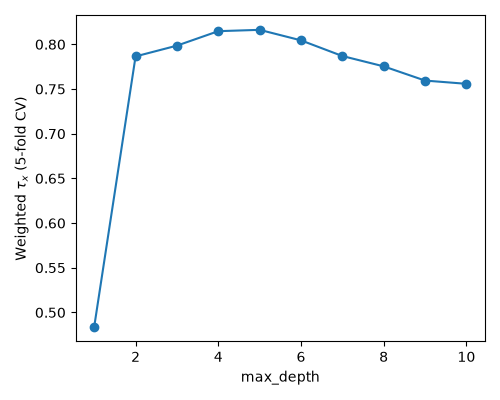

Note
Go to the end to download the full example code.
Partial label ranking with data frames and sample weights#
This example fits a DecisionTreePartialLabelRanker to survey
answers stored in pandas data frames, with categorical and numerical features, and
with sample weights that count the respondents of each row. A
ColumnTransformer encodes the features, and metadata
routing passes the weights through GridSearchCV
to the ranker.
Survey answers#
Each respondent of a synthetic survey lives in a region, has an age and ranks four means of transport, with ties when they like some of them the same. The utility of each means of transport depends on the region and the age, plus some noise, and the means whose utilities round to the same value are tied. The rankings are a data frame with a column per means of transport, which holds its dense position, as described in Ranking representation.
The ages are recorded in years, so many respondents give the same answers. Those are stored once, in a row whose sample weight is the number of respondents who gave them.
import numpy as np
import pandas as pd
from scipy.stats import rankdata
rng = np.random.RandomState(0)
n_respondents = 2000
labels = ["bus", "car", "bike", "train"]
region = rng.choice(["north", "south", "east"], size=n_respondents)
age = rng.randint(18, 81, size=n_respondents)
region_effect = pd.DataFrame(
[[1, 0, -1, 0], [-1, 1, 0, 0], [0, -1, 1, 1]],
index=["north", "south", "east"],
columns=labels,
)
age_effect = np.outer((age - 50) / 30, [0.5, -0.5, -1, 0.5])
utilities = (
1.5 * region_effect.loc[region].to_numpy()
+ age_effect
+ 0.5 * rng.normal(size=(n_respondents, len(labels)))
)
respondents = pd.DataFrame({"region": region, "age": age})
respondents[labels] = rankdata(-np.round(utilities), method="dense", axis=1)
answers = respondents.value_counts().rename("count").reset_index()
X = answers[["region", "age"]]
y = answers[labels]
sample_weight = answers["count"].to_numpy()
print(f"{n_respondents} respondents in {len(answers)} rows")
answers.head()
2000 respondents in 895 rows
Pipeline and metadata routing#
The ranker needs numerical features, so the column transformer one-hot encodes the region and passes the age through. The tree does not depend on the scale of the features, so the age is not scaled.
With metadata routing enabled, the ranker
requests the weights for fit and for score, so the tree weighs each row by
its respondents and the score of each validation fold is the mean \(\tau_x\)
coefficient of its respondents. The search tunes the maximum depth of the tree.
Each fold holds whole rows, so the identical respondents of a row are never split
between the training and the validation samples.
import matplotlib.pyplot as plt
import sklearn
from sklearn.compose import make_column_transformer
from sklearn.model_selection import GridSearchCV, KFold
from sklearn.pipeline import Pipeline
from sklearn.preprocessing import OneHotEncoder
from sklr.tree import DecisionTreePartialLabelRanker
sklearn.set_config(enable_metadata_routing=True)
ranker = (
DecisionTreePartialLabelRanker(random_state=0)
.set_fit_request(sample_weight=True)
.set_score_request(sample_weight=True)
)
encoder = make_column_transformer(
(OneHotEncoder(), ["region"]), remainder="passthrough"
)
pipeline = Pipeline([("encoder", encoder), ("ranker", ranker)])
max_depth = list(range(1, 11))
cv = KFold(n_splits=5, shuffle=True, random_state=0)
search = GridSearchCV(pipeline, {"ranker__max_depth": max_depth}, cv=cv)
search.fit(X, y, sample_weight=sample_weight)
fig, ax = plt.subplots(figsize=(5, 4))
ax.plot(max_depth, search.cv_results_["mean_test_score"], marker="o")
ax.set(xlabel="max_depth", ylabel=r"Weighted $\tau_x$ (5-fold CV)")
fig.tight_layout()
print(search.best_params_)

{'ranker__max_depth': 5}
The score jumps once the tree can separate the three regions, which takes two splits, and then grows while it splits the ages, until its leaves fit the noise of few respondents.
Features and predictions#
The pipeline stores the columns of X in its feature_names_in_ attribute,
and the column transformer gives the names of the features that reach the tree.
The predictions are arrays whose columns follow those of y, so they are
turned back into a data frame with its column names.
best = search.best_estimator_
print(best.feature_names_in_)
print(best["encoder"].get_feature_names_out())
new_respondents = pd.DataFrame(
{"region": ["north", "south", "east"], "age": [25, 50, 75]}
)
pd.DataFrame(best.predict(new_respondents), columns=y.columns)
['region' 'age']
['onehotencoder__region_east' 'onehotencoder__region_north'
'onehotencoder__region_south' 'remainder__age']
Weights as repeated samples#
A weight that counts identical respondents is the same as repeating their row, so
the tree fitted to the rows with their weights predicts as the one fitted to every
respondent without weights. The routing is only needed in the meta-estimators: a
ranker outside them receives the weights directly in its fit method.
sklearn.set_config(enable_metadata_routing=False)
repeated = answers.loc[answers.index.repeat(answers["count"])]
unweighted = sklearn.clone(best).fit(repeated[["region", "age"]], repeated[labels])
ages = np.arange(18, 81)
grid = pd.DataFrame(
{
"region": np.repeat(["north", "south", "east"], len(ages)),
"age": np.tile(ages, 3),
}
)
print(np.array_equal(unweighted.predict(grid), best.predict(grid)))
plt.show()
True
Total running time of the script: (0 minutes 0.669 seconds)